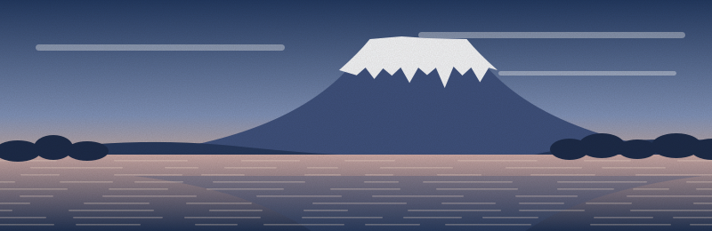

总览
OVERVIEW
航班
FLIGHT SCHEDULE
HK Express 香港快运 (订位代号：见确认邮件 | 票种：Essential) HK Express Booking ref: see confirmation email (Essential)
| 行程Leg | 航班号Flight | 起飞与抵达Departure & Arrival | 舱等与备注Fare Class & Notes |
|---|---|---|---|
| 去程Outbound | UO769 | UO848 |
03 Oct (六) 01:00 槟城 (PEN) → 香港 (HKG) 转机 → 03 Oct (六) 14:45 抵达 成田 (NRT Terminal 2) |
舱等: Z | U 成田 T2 落地出关约 45-60 分钟 |
| 回程Inbound | UO629 | UO746 |
12 Oct (一) 02:20 羽田 (HND Terminal 3) → 香港 (HKG) 转机 → 12 Oct (一) 15:40 返抵 槟城 (PEN) |
舱等: W | Z 10/11 20:40 出门 · 浅草乘都营浅草线直通羽田 T3 |
航班与交通精准说明：
- 去程 14:45 落地成田 T2
- B1 空港第2ビル駅券売機扫 QR 换实体票：班次现场选，目标 16:42，出关极快则 16:22
- Keisei Skyliner 36 分钟到日暮里
- 东口下楼在 ② 番のりば搭 都08 巴士（¥210/人），6 站直达「竜泉」，下车平路约 90 米进公寓
- Day 1 全程公共交通，不打车
宿舍
ACCOMMODATION
3.1 东京基地：Luxury 浅草 Ⅱ (303号房) 3.1 Tokyo Base: Luxury Asakusa II (Room 303)
官方确权：真实大楼名与正规旅行业执照彻底核实锁定！
- 门口楼名：Luxury 浅草 Ⅱ（房东 9/27 确认）
- 旅馆业登记名 LUXURY STAY HOTEL 浅草竜泉店
- Airbnb 房源名
Yoin TOKYO in Asakusa
- 正规合法执照编号：7台台健生環 第10242号
- 东京都台东区保健所生活环境课依《旅馆业法》正式核发，消防卫生达标
- 物业属性与开业年份：2026 年崭新开幕公寓式酒店
- 全栋 23 间独立套房，配正规乘客电梯与无障碍设施
- 现代新耐震基准建筑，卫浴家电全新
- 多平台真实口碑
- Trip.com 台湾钻石会员家庭住客 10/10 满分（2026年9月1日评价：“這次入住體驗非常滿意！地理位置很方便，附近交通、餐飲都很齊全，房間乾淨整潔，環境舒適，入住期間能感受到店家對細節的用心”）
- Airbnb 维持 4.8~5.0 满分区间超赞房东
- 精确地址：〒110-0012 東京都台東区竜泉 3-10-7
- 原文件所提「フォルテハイツ」为 1976 年老楼旧名，已作废
- 给司机看地址和门口楼名「Luxury 浅草 Ⅱ」即可
预订平台Platform
Airbnb（房源名：Yoin TOKYO in Asakusa · Superhost）
房型与面积Room Size
303号房（竜泉303）· 27㎡ · 2 Single Beds (两张独立单人床)
详细地址Address
入住与退房Check-in
自助入住。入住指南 10/2 日本时间 18:00 自动发到 Airbnb，里面有钥匙密码和钥匙盒位置。进不去先 WhatsApp 房东（号码存在手机通讯录），或发 Airbnb 消息。退房：钥匙放回原处，关灯、电视、空调。房里有电热水壶和洗衣机；Wi-Fi 名称和密码房东还在确认。
预订日期Dates
10月3日 – 10月12日 (共 9 晚)
总费用Total Price
RM 3,868.47 (约 RM 430 / 晚，已含 RM 336 折扣)
入住人数Guests
2 adults (订单已确认为 2 人)
扣款日期Payment
9月24日自动扣款 RM 3,868.47 (Pay later，无额外费用)
取消政策Cancellation
10月2日 16:00 (日本时间) 前全额退 · 即大马时间 10/2 15:00
出入时间Check-in / out
Check-in 16:00 后 · Checkout 10:00 前 · 电子锁自助入住 (Lockbox)
房源已确认设施 (Airbnb 官方列表 29 项)：
- 电梯（正规电梯直达楼层）
- 厨房：微波炉、冰箱、瓦斯炉、锅具与调味料、碗筷杯盘、餐桌
- 洗衣：独立洗衣机、晾衣架
- 浴室：浴缸、吹风机、洗发水/护发素/沐浴乳、毛巾床单卫生纸
- 其他：衣柜、阳台与城市景观、Wi-Fi、冷气
- 盥洗备品齐全，洗发水沐浴乳吹风机都不用带
两件出发前要处理：
- 自备眼罩
- 房客评价指出卧室窗帘非全遮光，日出后房间偏亮
- Day 2 (06:30 出门) 与返程日都需要睡饱
- 入住前须提交身分证件
- 日本民泊法规定：须提供 2 人的姓名、住址、职业与护照资料页照片
- 只走 Airbnb 站内讯息传送，不要用 email
- 先确认两本护照效期涵盖 2026年10月（建议 6 个月以上）
住处周边生活圈与 24h 应急补给（Google Maps 步行实测 · 点击直达导航）
基准起点：公寓大门 東京都台東区竜泉 3-10-7 Luxury 浅草 Ⅱ，全为平坦柏油街道（零台阶、零陡坡）：
| 分类 / 店名 | 步行距离与耗时 | 营业时间 | 特色与长辈友好度 | 一键导航 |
|---|---|---|---|---|
| まいばすけっと (My Basket) 竜泉1丁目店 |
267 米 (3.9 分) | 08:00–23:00 | 永旺旗下平价生鲜！2L大瓶水（¥100）、明治鲜奶、麝香葡萄与切片水果，物价比便利店省 40%，刷 Suica/Apple Pay | Google 导航 |
| ローソン (Lawson) 台東三ノ輪一丁目店 |
278 米 (4.0 分) | 24 小时 | 通道宽敞！自带「街角厨房（まちかど厨房）」，清晨/深夜供应现炸炸鸡块（からあげクン）、现做便当与热饭团 | Google 导航 |
| セブン-イレブン (7-Eleven) 台東三ノ輪一丁目店 |
392 米 (5.6 分) | 24 小时 | 内设 Eat-in 堂食长椅座（长辈可坐着慢饮热茶）、Seven Bank ATM（随时插 Wise 卡提日元现金）及干净公厕 | Google 导航 |
| マイマート (Main Mart) 竜泉店 |
74 米 (73 秒 · 转角) | 10:00–22:00 (周日休) |
就在转角！老街杂货铺，收银台旁常设代售浅草百年传奇名店【Pelican ペリカン】手作厚吐司，0 排队偶遇！ | Google 导航 |
| CAPITAL WASH コインランドリー (千束) |
247 米 (3.6 分) | 24 小时 | 阴雨天强力烘干备用！大型燃气强力烘干机，20 分钟 ¥200 即可烘得全家衣物蓬松滚烫干透 | Google 导航 |
| すき家 (Sukiya) 下谷三丁目店 |
502 米 (7.0 分) | 24 小时 | 随时供应热气腾腾的日式烤鲑鱼早餐定食、牛肉饭、热猪肉味噌汤，长辈不想吃冷食时的全天暖胃首选 | Google 导航 |
3.2 河口湖住宿：SAWA Hotel（サワホテル）· 1晚 已预订 3.2 Kawaguchiko: SAWA Hotel (Booked)
| 饭店 | SAWA Hotel（サワホテル） — 已预订 |
| 地址 | 山梨県南都留郡富士河口湖町船津 2090 |
| 房型与价格 | Twin Room 21㎡（税后 RM 332 · 不含早） |
| 空间与设施 | 21㎡ 宽敞大空间（2 个 28 吋大箱可平摊）、房内独立微波炉 |
| 早餐 | 不含早餐 — 开车 4 分钟至 Ogino 大超市（1.4km · 专属大停车场），前一晚买好，房内微波炉加热 |
| 退房时限 | 10:00 前必须退房（硬性上限，已确认） — Day 5 上午定于 09:45 优雅退房，比上限早 15 分钟，从容无压力 |
| 停车 | 门口平面免费停车 — 无立体机械车位，没有限高／限宽 |
| 位置 | 离河口湖大桥 1.5 km（自驾 3–5 分钟；步行不现实） |
住 SAWA 的四个连锁影响（行程已全部对应调整）：
- 不含早 → 10/6 晚上务必先去 Ogino 买好隔天早餐：Day 5 是 04:30 出门（04:00 起床），清晨没有店开
- 饭店本身没有免费接驳车（那是東横INN 的服务）→ 已租车自驾（10/6 12:30 → 10/7 12:30），不受影响
- 离湖 1.5km → 清晨看富士山一定要开车，走路到不了湖边
- 退房时限 10:00（硬性） → Day 5 晨间环线预计 08:20–08:25 回到饭店，09:45 退房；洗热水澡、吃热食、收行李有 75–80 分钟
为什么选 SAWA：
+40% 的宽敞空间（21㎡），两个大行李箱从容摊开不挤脚；房内有微波炉，晚上开车 4 分钟带妈妈去 Ogino 大超市买晴王麝香葡萄与和牛熟食超惬意。自驾开车到湖边只要 3–5 分钟，彻底抹平距离劣势。
交通
TRANSIT & ROUTING
4.1 交通卡与支付策略（已实测验证）4.1 Suica & Payment Strategy
| 成员Member | 方案Option | 取得/储值方式Method | 实测与体验Experience |
|---|---|---|---|
| 本人 (User) | iPhone 17 Pro Apple Wallet Suica | Wise Digital Visa 储值 | 已实测成功开通 快捷交通模式：手机无需亮屏解锁，碰闸机秒过 |
| 妈妈 (Mom) | Welcome Suica 红色实体卡 | 成田机场 T2 B1 现场现金购买 | 免押金、长辈 0 门槛；建议附挂绳伸缩卡套挂于随身小包防丢失 |
Wise 提现技巧（Seven Bank ATM 避坑指南）：
- 成田 T2 到达大厅 1F 或 B1 均有 7-Eleven / Seven Bank ATM
- 插入 Wise 卡 → 选「Savings Account」
- 结算务必选「JPY / Without Conversion」：直接扣 Wise 日元余额，0 汇率损失，避开 3–5% DCC 货币转换费
专属票券注意：
Skyliner 机场特快与河口湖高速巴士需单独购票，Suica 卡无法直接刷卡乘车。
4.2 驻地交通特性：台东区竜泉4.2 Transit from Ryusen Base
| 车站Station | 步行距离Walk | 直达热门目的地Direct Destination |
|---|---|---|
| 三ノ轮站 (Minowa) | 6 分钟 | 日比谷线直达：上野 (4m)、秋叶原 (8m)、筑地 (18m)、银座 (20m)、六本木 (28m) |
| 入谷站 (Iriya) | 10 分钟 | 日比谷线 (无下行手扶梯，拖大行李建议走三ノ轮站) |
| 浅草站 (Asakusa) | 16 分钟 | 银座线 (起点站必有座去涩谷) · 都营浅草线 (直达羽田机场) |
门口巴士小抄：竜泉站牌（出门 1–2 分钟 · 均一价 ¥210）Bus Cheatsheet: Ryusen Stop (1-2 min walk, flat ¥210)
- 三条都营巴士线共用竜泉站牌，平地上下车、零楼梯，带长辈或拎大包时优先
- 同名站牌在国際通り两侧各一根：看巴士车头显示的行先（终点站）再上车
| 路线Route | 方向（车头行先）Direction | 用途与时间Use & Time |
|---|---|---|
| 草43 | 浅草雷門行 | 去浅草寺只有 3 站，约 10 分钟。逛本堂在「浅草公園六区」下车更近，拍雷门坐到底站 |
| 草63 | 浅草寿町行 | 同样去浅草（浅草公園六区／浅草雷門南下车），跟草43 二选一先到先坐 |
| 草63 | 池袋駅東口行（反方向） | 直达池袋 35–40 分（比地铁换乘省力）· 中途西日暮里可换 JR 山手线 |
| 都08 | 日暮里駅前行 | 换山手线首选：约 10 分钟到日暮里（山手线 + 京成 Skyliner + 常磐线） |
| 都08 | 錦糸町駅前行 | 直达押上（晴空塔）约 20 分钟，中途東武浅草駅 |
- 去浅草：草43＋草63 合并约 10 分钟一班，先来哪班坐哪班
- 草43 约 30 分一班 · 末班 20:47
- 草63 约 10–15 分一班 · 末班 21:51
- 都08 班距（已核对官方三种班表 · 日暮里駅前②番のりば）
- 平日 8–10 分、土曜 11–13 分、休日 11–15 分：周末不是 20–30 分一班，比想像密
- 始発 06:30、終発 22:04–22:18
- 晚归一律日比谷线
- 竜泉→三ノ轮站只有 1 站、步行 7 分钟即到，不值得坐巴士
河口湖 2D1N
KAWAGUCHIKO SPECIAL GUIDE
6.1 为什么选择过夜而非当日往返Why Overnight Stay Matters
| 对比项目Item | 当日往返Day Trip | 过夜 1 晚 (推荐)Overnight Stay |
|---|---|---|
| 清晨富士山 | 9:30 抵达时常已被云遮挡 | 05:30 独享无云赤富士 |
| 体力负担 | 高 (单日来回 4-5 小时车程) | 低 (轻松拆解为两天) |
气候提示：
- 10月是全年空气最干燥、富士山能见度极高的月份
- 10/7 清晨 04:30 出车，在本栖湖看千圆纸钞机位的日出，是整趟核心体验
- 平地日出 05:44–05:46，太阳越过东侧山棱约 05:52 才真正现身（山棱仰角 1.3° 实测换算，延迟约 7 分钟），湖畔实景以后者为准
订票
BOOKING SCHEDULE
还要做Still to do
已办好Done
- Airbnb 身份资料已交（站内讯息）
- Visit Japan Web 已登记，通关二维码已截图
- 10/8 开顶巴士确认信已截图，两部手机都有
- 旧的 9/23 SKY 抢票闹钟已取消
- 大马正本驾照＋IDP 已确认；10/6 取车带护照＋正本驾照＋IDP 三样
- 上网卡 5 项行前设置已做好
- Yoin TOKYO 303 号房 · 10/3–10/12（9 晚）· RM 3,868.47（9/24 已扣款）· 有电梯
- SAWA Hotel（船津 2090）：Twin，不含早，门口免费停车；10/6 晚上开车 4 分钟去 Ogino 买隔天早餐
- 河口湖巴士两程：10/6 08:10 东京站八重洲南口 9 号 → 河口湖 10:12（10:07 是富士山站，别下错）；10/7 13:30 → 東京駅 15:35
- ニッポンレンタカー 河口湖駅前：10/6 12:30 – 10/7 12:30，营业 08:00–19:00
- 涩谷 SKY：SHIBUYA STREET RIDE 巴士套票 10/8 15:20（9/15 订妥）。SKY 券是自由入场券，16:35 到 14F 换票可能排到较晚时段，应对见当天
- 旅游保险：两人各一张 Chubb Executive / Zone 1 Individual 保单（10/2–10/13，9/10 投保）
- Suica：你的 iPhone 已开 Apple Wallet Suica；妈妈的 Welcome Suica 落地在成田 T2 B1 红色机台用现金买
- 上网卡（Hello1010 · au）：你 eSIM 20GB／15 天，妈妈实体 Nano-SIM 10GB／15 天（插卡槽2）
- 10/11 都营浅草线去羽田末班直通 23:17 浅草 → 00:03 T3（9/19 查过）
预算
BUDGET SUMMARY
预算视觉化决策：
2 人旅费总额约 RM 14,348，其中约 62%（机票+住宿）出发前已提前锁定。
8.1 固定支出 (已确定 / 预估)Fixed Expenses
HK Express 槟城往返机票 (Essential 2人)RM 5,208
东京 Airbnb 9 晚住宿 (Room 33 · 已订妥)RM 3,868
河口湖 SAWA Hotel 1晚 + 往返高速巴士 (2人 · ¥2,300×4)约 RM 617
河口湖自驾 (租车 ¥11,990 含全险 + 油 + 停车)约 RM 350
固定支出小计RM 10,043
8.2 在地花费预估 (2人)Local Expenses Estimate
Skyliner 机场特快 (2人 × ¥2,310 线上折扣价)¥4,620
计程车 (主行程 0 趟 ＋ 备选 3 趟缓冲，明细见下)¥6,000
浅草 → 羽田 T3 都营浅草线 (2人 × IC ¥599)¥1,198
东京地铁与交通 (Suica 9天)¥14,000
SHIBUYA STREET RIDE 套票 ×2 (巴士 ＋ SHIBUYA SKY 入场券 · 官方 ¥5,400/人)¥10,800
每日餐饮 (¥7,500/人/天 × 2人 × 8 天)¥120,000
门票与杂费 (高德院/报国寺＋抹茶/浅草等)¥9,000
在地花费合计¥165,618 (约 RM 4,305)
8.2b 计程车明细 (2026/4/20 新费率)Taxi Breakdown (Apr 2026 Tariff)
初乗 ¥500 / 1.0 km、距离加算 ¥100 / 232 m、时间加算 ¥100 / 1分25秒 (≤10km/h)。2026 年 4 月 20 日起东京23区调涨 10.14%。
主行程实搭
主行程小计 (全程公共交通，不打车)¥0
备选 (主方案不搭，遇雨／行李重／太累才用)
Day 6 · 浅草站 → 公寓 (2.15km，站前排班) — 涩谷太累的应急¥1,100
Day 5 · 东京站 → 竜泉 (6.6km) — 主方案已改 JR＋日比谷线 2人 ¥648¥2,900
Day 9 · 公寓 → 浅草站 (2.15km) — 主方案走 都08 公车，此为 Plan B¥2,000
计程车预算 (＝备选上限)¥6,000
分辨规则：从公寓叫车 ≈ ¥2,000 (跳表 ¥1,100–1,200 ＋ 迎車 ¥420–500 ＋ 手配料 ¥100)；从车站排班上车 ≈ ¥1,100 (纯跳表)。
叫车 app：GO (首选，市占最大、台东区车最多、支援海外手机号与海外信用卡) > S.RIDE / DiDi (手配料 ¥0，当备援)。
别用 Uber：日本的 Uber「预约」一律派ハイヤー (高级车)，另加服务费，同一段路会报到 ¥2,000+。用 GO 的「今すぐ配車」，不要用「予約」(另收 ¥500–1,000)。
预估总额 (2人总计)
RM 14,348 (约 RM 7,174 / 人)
提醒
TIPS & CRITICAL REMINDERS
绝对不能忘记的 7 件事（按日期）7 Must-Not-Forget Moments
旅游保险速查 · Chubb Executive / Zone 1Travel Insurance Cheat Sheet
已办妥：两人各持一张 Individual 保单（2026-09-10 投保）。
- 为什么两人各买各的
- Chubb 的「Plan Category: Individual」承保对象只有 Certificate 上具名的那一位
- Family Plan 只涵盖配偶与子女，父母不在内
- 你一张、妈妈一张
- 皆为 Chubb Executive / Zone 1 单次旅程保单，期间同为 10/2–10/13
- 妈妈 62 岁未满 65，保费与保额都在正常档
- 两张保单已于 2026-09-10 投保完成：远早于「行程开始前必须生效」门槛（Part 2 第 4 条：出发前 24 小时 = 10/2 中午）
- 出发前：从两张 Certificate 各抄下保单号与 Chubb 24 小时紧急电话，两支手机各存一份 + 纸本放钱包
Zone 1 涵盖范围已确认：
Zone 1 明列 Japan 与 Hong Kong SAR —— 你们 PEN → HKG 转机 → NRT 全程都在保障区内，不需要升级到 Zone 2。
出发前把这三格填满（抄自 Certificate of Insurance）：
- 保单号 / Certificate No.：__________________
- 24 小时紧急电话：__________________ ← 两支手机都存，另抄纸本放钱包
- 保障期间：确认涵盖 10/2 – 10/13（保障自出发前 24 小时起算，回国入境后 24 小时或到家为止）
- 另确认：是 Single Trip（单次）还是 Annual（年度）：Annual 保障期是整年，看起讫日是否已涵盖十月
| 项目Benefit | 你的实际保额 (Executive · 每人)Your Limit |
|---|---|
| 海外医疗 · 因意外（62 岁，未满 65） | RM 800,000 |
| 海外医疗 · 因生病（含 COVID-19 RM 450,000） | RM 450,000 |
| 紧急医疗后送 / 遗体运返 | 无上限 Unlimited |
| 回马后续医疗（30 天内，须返马 24 小时内就医） | 意外 RM 50,000 / 生病 RM 25,000 每张单据自付 RM 50 |
| 每日住院津贴（最多 60 天） | RM 250 / 天 |
| 意外身故 / 永久残疾 | RM 300,000 |
| 行程取消（出发前，限承保原因） | RM 50,000 改期 Postponement 仅 RM 500 |
| 行程缩短（Curtailment） | RM 50,000 |
| 行程中断 Travel Disruption | RM 1,000 |
| 行李遗失 | 总额 RM 5,000 单件上限 RM 500、手提电脑 RM 1,000 |
| 证件遗失（护照等） | RM 5,000 |
| 现金遗失 | RM 750（自付 RM 100） |
| 班机延误 | 每满 6 小时 RM 200，上限 RM 3,600 |
| 行李延误（海外） | 每满 6 小时 RM 200，上限 RM 800 |
| 转机失败 / 改道 / 超卖 / 错过起飞 | 各每满 6 小时 RM 200，各上限 RM 600 |
| 信用卡遭盗刷 | RM 500 |
| 个人责任 | RM 1,000,000 |
妈妈（1964 年生，出发时 62 岁）——买保单前先确认这件事：
- 未满 65 岁，保额走正常档
- Executive：意外医疗 RM 800,000、疾病医疗 RM 450,000
- 若已满 65，疾病医疗只剩 RM 100,000，这几年买正好
- 既往症（Pre-existing Condition）完全不赔：无等待期、无部分赔付
- 定义：出发前 12 个月内「看过医生、吃过处方药、有明显症状，或一般人看得出来」的任何状况
- 高血压 / 糖尿病 / 胆固醇 / 心脏 任何长期用药，该病在日本发作 Chubb 一分不出
- 买保单前先确认妈妈的用药清单
- 必要时找有既往症附加的产品（须另行核保）
- 备英文处方笺随身
| 状况Situation | 门槛Threshold | 现场立刻要做的事Do This Immediately |
|---|---|---|
| 生病 / 受伤 | — | 先打 24 小时紧急电话，Chubb 可直接向医院担保（Cashless Hospital Admission），不必自己垫钱。所有收据、诊断书、处方笺全部留底。 |
| 班机延误 | 满 6 小时起赔，之后每满 6 小时再一档 | 向航空公司柜台索取书面延误证明（须载明延误时数与原因）。 若航空公司提前 24 小时以上通知你 → 不赔。自己迟到 → 不赔。 |
| 行李延误 | 抵达后 6 小时未送达 | 出关前就在行李转盘旁申报，务必拿到 PIR (Property Irregularity Report)。每 6 小时 RM 200，上限 RM 800。 |
| 行李 / 证件 / 现金遗失 | 24 小时内必须报案 | 就近到交番 (KOBAN，日本派出所) 报案并拿书面报案纪录 — 没有报案书 = 不赔。 |
| 行李在航空公司手上损坏／遗失 | 发现当下 | 立即申报 + 必须取得 PIR，否则不赔。 |
| 台风导致取消 / 缩短行程 | 出发前 14 天内发生 | 天灾 (Natural Disaster) 属承保原因。留存航空公司取消通知与气象警报截图。十月是日本台风尾季。 |
理赔时效与实务：
- 事发后 30 天内必须通知 Chubb
- 线上提交 e-claim：Chubb Malaysia Claims Portal
- 客服 1-800-88-2846（周一至五 08:30–17:15）
- 行李延误按「人」算不按「件」算，同一件行李只准一个人申报
- 两人的东西分装两个箱（前提是妈妈也有保单），真延误时两人各领一份
- 行李不可离身：放在公共场所无人看管遭窃不赔；车站、餐厅别把箱子推远
- 单件物品上限 RM 500：相机、镜头等贵重品超出部分不赔，贵重物品一律随身不托运
- 行程取消只赔承保原因
- 自己改变主意、家人改变主意：不赔
- 承保的是身故、重病住院、强制隔离、罢工停飞、天灾等
叫车 app 备忘 (出发前先装好)Taxi App Cheat Sheet
现在就做：
下载 GO，用马来西亚手机号 + 海外信用卡注册 (GO 自 2023/11 起支援海外号码与海外发卡)。备援装 S.RIDE 或 DiDi。地址先存好：
東京都台東区竜泉 3-10-7 Luxury 浅草 Ⅱ。
别用 Uber：
日本的 Uber「预约」一律派ハイヤー (高级车) 且另收服务费，同一段路会报到 ¥2,000+。GO 请用「今すぐ配車」，不要用「予約」(另收 ¥500–1,000；即时叫通常 3-8 分就到)。
实用备忘手册Practical Travel Notes
气温、防吹头与双鞋轮换：
- 东京：日间 20–24°C、早晚 15–18°C
- 河口湖清晨仅 5–8°C 且湖风刺骨（体感 3–5°C）
- 备好轻薄羽绒服与围巾/毛线帽：最忌清晨冷风直吹长辈头部，引发偏头痛或血管收缩
- 带便携保温杯装热水暖胃
- 长辈双鞋原则：不要穿新鞋
- 准备两双穿惯的减震运动鞋轮流穿
- 改变足底受力点，缓解足跟与膝盖酸痛
长辈防走散「锁屏壁纸法」与健康关怀：
- 锁屏壁纸法：中日文紧急联络卡截屏直接设为妈妈手机的锁屏壁纸
- 「私は旅行者です。日本語が話せません。同行の息子：+60 1x-xxxxxxx／宿泊先：東京都台東区竜泉 3-10-7 Luxury 浅草 Ⅱ 303号室」
- 不用解锁，路人或警察按亮手机就能联络
- 药妆店急救：第一晚在楼下 70m 龙泉药局买盒「休足时间」与「撒隆巴斯」，睡前贴小腿与脚底
- 药品与红线
- 妈妈常规处方药备足 12 天，带英文原药盒随身登机
- 大马出境绝对禁止携带肉干（Bak Kwa）、香肠与新鲜水果
- 出关加速：出发前 1~2 周在 Visit Japan Web 填好同行家人，截屏保存离线二维码
行动网络方案与关键防坑设置（Hello1010 · KDDI au）：
- 已定方案
- 本人（iPhone 17 Pro）：eSIM 20GB / 15天（RM 58.38）
- 妈妈（vivo V23e）：实体 Nano-SIM 卡 10GB / 15天
- 日均 2GB+ 纯高速流量，保留完整个人热点额度供山区救急
- 5 大行前必做设置
- iPhone 关 iCloud 行动数据：「设定」→「照片」→「行动数据」关闭，防白天拍照后台同步吃光流量（晚上回房连 WiFi 自动备份）
- vivo 卡槽2先检查：卡槽2与 MicroSD 记忆卡共用，出发前用卡针顶出卡托，有记忆卡请提前取出
- 防大马卡天价漫游：插卡后在安卓设定中将「默认数据」设为卡槽2（日本卡），并关闭卡槽1数据漫游
- 双机下好离线地图：Google Maps 提前下载「东京全区」与「富士五湖」离线地图
- WhatsApp 语音演练：纯流量卡无法拨打普通电话，出发前关家里 WiFi，用行动数据打通演练一次接听
公寓热水器开关与「私家温泉」：
- 热水器控制面板（防踩坑）
- 洗澡前先按厨房或浴室门外墙上的【運転】或【入/切】按键
- 指示灯亮起、显示 40–42°C 才有热水
- 自制私家香氛温泉（Day 4 晚间的第三选项，不取代 ゆらり）
- 公共温泉必须全裸：长辈若有心理负担或怕受凉，花 ¥300–¥500 买盒药用碳酸「入浴剂」（花王巴布 / 地球温泡），在浴缸放一池热水，关门泡澡
- 妈妈若本来就不排斥裸汤，ゆらり 的富士山露天风吕仍是招牌，别自己先砍掉
- 竜泉公寓有浴缸（已确认），东京这 9 晚随时能泡
- SAWA 那晚有缸就泡、没缸就淋浴，不必特地打电话问
- 垃圾三分类：房间内分三袋，切勿混装
- 可燃：厨余、纸屑
- 倒空撕膜的 PET 塑料瓶
- 易拉罐 / 玻璃瓶
国際通り补给带（回家顺路，不算行程）：
- 浅草ROX（草43/草63沿线）：UNIQLO、GU（3G栋）、3COINS，约 10:00–21:00
- Hoppy通り煮込み街：就在 ROX 旁，牛筋煮込み + 户外座，傍晚 4–5 点去最舒服
- 初音小路：藤棚小酒馆巷，路过拍照即可
- 浅草观音裏（本堂北侧 · 回竜泉路上）：本地人正餐区，晚餐没着落就往这走
夜晚与深夜备忘：
夜晚浅草寺点灯至 23:00——仲见世打烊后铁卷门上的浮世绘彩绘 + 无人打光本堂是绝佳夜拍题材，任何一晚饭后散步 20 分钟即达；驴火 ドン・キホーテ浅草店（24小时·国際通り上）是 Day 9 深夜出发前唯一还开着的补给站。